KCC 로컬 유랑단
전국 사업장을 돌아보는 랜선 도장깨기
2024.04.30

세종
김천
서산
원주
안성
여수






KCC 로컬 유랑단
세종 소정구길 42
KCC 세종공장은 150여 명의 직원으로 구성되어 있으며, 주로 엔지니어링 플라스틱에 쓰이는 ‘촙 스트랜드’, 건축 시장에 쓰이는 ‘SMC로빙’, 자동차 범퍼 빔에 쓰이는 ‘GMT로빙’ 등 다양한 유리장섬유를 생산하고 있다. 세종공장이 보유한 유리장섬유 생산라인은 국내 최대 규모로 일일 생산량은 무려 220톤에 달한다. 최근에는 유리장섬유 부산물을 활용하여, 기존 플라스틱을 대체할 수 있는 신소재 ‘에컴파운드(ECOmpound)’를 개발했다. 세종공장은 순환자원 소재 개발 외에도 기부와 도서 기증, 빨래방 운영 등 다양한 사회공헌을 통해 ESG 활동을 지속적으로 이어가고 있다.